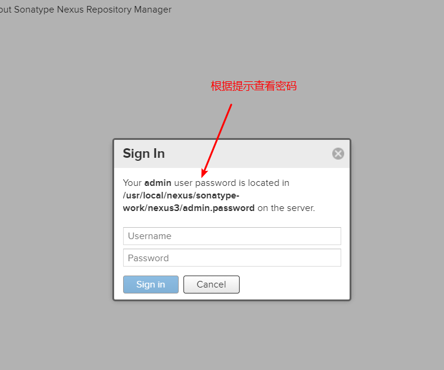

Linux下Nexus私服搭建
背景
本篇搭建设计到的相关资源如下：
- 操作系统：CentOS 7.9
- JDK: 1.8.0_211
- Nexus私服版本：nexus-3.29.2-02
Nexus介绍
Nexus 是Maven仓库管理器，如果我们使用Maven，我们可以从Maven中央仓库下载所需要的构件（artifact），但这通常没有公司这么干，一般都是在本地架设一个Maven仓库服务器，在代理远程仓库的同时维护本地仓库，以节省带宽和时间，Nexus就可以满足这样的需要。此外，它还提供了强大的仓库管理功能，构件搜索功能，它基于REST，友好的UI是一个extjs的REST客户端，它占用较少的内存，基于简单文件系统而非数据库。这些优点使其日趋成为最流行的Maven仓库管理器。
Nexus不是Maven的核心概念，它仅仅是一种衍生出来的特殊的Maven仓库。对于Maven来说，仓库只有两种：本地仓库和远程仓库。
Nexus私服特点
搭建私服后：本地仓库没有，再去私服下载，私服没有，再去中央仓库下载
- 减少网络带宽流量
- 加速Maven构建
- 部署第三方构件
- 提高稳定性、增强控制
- 降低中央仓库的负载
准备
搭建过程
部署
1 | [root@microservice ~]# mkdir /usr/local/nexus |
启动nexus之后，在浏览器访问http://ip:8081端口，ip就是你服务器的ip，访问之后，单击页面右上角的Sign in
初次登录会提示一个获取admin用户的默认密码路径，如下图所示：

按指定的路径，cat即可，获取到初始化admin用户密码之后就可以登录了，登录后会提示重置admin用户密码。
在Configure Anonymous Access时，按需选择，如果允许匿名访问私服，则可以允许，反之选择disable。
创建角色
创建用户
设置代理仓库
阿里云仓库的URL：https://maven.aliyun.com/nexus/content/groups/public/
注意事项
file descriptor警告
具体体现在/support/status状态页面的File Descriptors项目可能会显示 Recommended file descriptor limit is 65536 but count is 4096. 警告。
根据提示其实也能猜的出来，就是建议当前运行的私服建议文件句柄到65536。
这里在官网有具体的解释：https://help.sonatype.com/repomanager3/installation/system-requirements#SystemRequirements-AdequateFileHandleLimits
解决办法就是为当前nexus私服运行的用户，如：nexus，指定文件句柄：
1 | 使用root权限在/etc/security/limits.conf文件末尾添加： |
修改之后，重新进入运行用户，如：nexus，并重启nexus私服
项目中配置好私服访问地址后报未授权错误（Not authorized）
具体报错如下：
Could not transfer artifact org.apache.curator:curator-recipes:pom:2.11.0 from/to nexus
(http://192.168.198.128:8081/repository/maven-public/): Not authorized
这个原因是因为，在你本地maven配置文件（setting.xml）中mirrors标签只配置了私服的镜像，而在servers标签中配置对应的用户名和密码，要么找不到，要么没有配置
检查如下：
1 | <mirror> |
1 | <server> |
解决方案：检查你的配置，是否有确实两个配置中的一个或者是否两个配置中的id是否一致。如果没有配置则配置一下，如果不匹配，则将俩id改成一致
本质就是，通过mirror中的id去寻找server中相同id的用户名和密码，完了去访问私服。
如果配错或者漏配了，自然当前配置的mirror找不到用户名和密码，自然不能访问。（前提默认你私服的配置不允许匿名访问仓库）